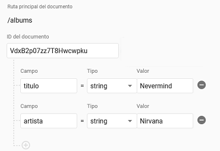
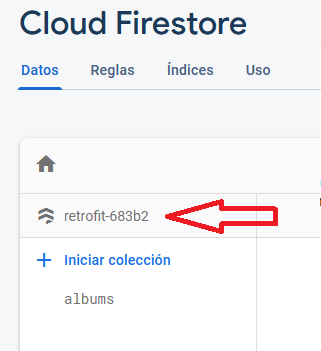

Crea el proyecto
-
Añade las dependencias para las librerías Retrofit y Glide:
build.gradle (Module: app)
dependencies {
// ...
implementation 'com.squareup.retrofit2:retrofit:2.9.0'
implementation 'com.squareup.retrofit2:converter-gson:2.9.0'
implementation 'com.github.bumptech.glide:glide:4.11.0'
annotationProcessor 'com.github.bumptech.glide:compiler:4.11.0'
}
-
Configura el ViewBinding
build.gradle (Module: app)
android {
//...
buildFeatures {
viewBinding true
}
}
-
Concede permiso de acceso a internet a la App:
AndroidManifest.xml
<manifest xmlns:android="http://schemas.android.com/apk/res/android" ...>
<uses-permission android:name="android.permission.INTERNET"/>
// ...
</manifest>
-
Crea el grafo de navegación nav_graph.xml
-
Añade el NavHostFragment en el layout de la MainActivity
activity_main.xml
<?xml version="1.0" encoding="utf-8"?>
<androidx.constraintlayout.widget.ConstraintLayout
xmlns:android="http://schemas.android.com/apk/res/android"
xmlns:app="http://schemas.android.com/apk/res-auto"
android:layout_width="match_parent"
android:layout_height="match_parent">
<androidx.fragment.app.FragmentContainerView
android:id="@+id/fragment"
android:name="androidx.navigation.fragment.NavHostFragment"
android:layout_width="match_parent"
android:layout_height="match_parent"
app:defaultNavHost="true"
app:navGraph="@navigation/nav_graph" />
</androidx.constraintlayout.widget.ConstraintLayout>
-
Crea un nuevo destino en el grafo de navegación llamado ItunesFragment
Configura el ViewBinding:
ItunesFragment.java
public class ItunesFragment extends Fragment {
private FragmentItunesBinding binding;
@Override
public View onCreateView(@NonNull LayoutInflater inflater, ViewGroup container,
Bundle savedInstanceState) {
return (binding = FragmentItunesBinding.inflate(inflater, container, false)).getRoot();
}
@Override
public void onViewCreated(@NonNull View view, @Nullable Bundle savedInstanceState) {
super.onViewCreated(view, savedInstanceState);
}
}
Itunes Api
Utilizaremos la librería retrofit para realizar llamadas a la api de Itunes y obtener los datos.
La librería GSON, realizará el mapeo entre datos JSON y objetos Java.
Para utilizar retrofit hay que se necesitan 3 cosas:
- Las clases para mapear el JSON
- Un interfaz que defina las llamadas HTTP
- Una variable en la que retrofit implementará el interfaz
Crearemos estos 3 componentes en el mismo fichero (aunque se podría hacer en ficheros distintos). Crearemos la clase Itunes.java
y pondremos estos 3 componentes como elementos static de esta clase:
Crea el fichero Itunes.java:
Itunes.java
public class Itunes {
}
Clases para el mapeo
La respuesta de la llamada a la API http://itunes.apple.com/search?term=beatles es similar a la siguiente:
{
"results": [
{
"artistName": "The Beatles",
"trackName": "Let It Be",
"artworkUrl100": "https://mzstatic.com/image/39b2caf.jpg"
},
{
"artistName": "The Beatles",
"trackName": "Here Comes the Sun",
"artworkUrl100": "https://mzstatic.com/image/6edbf5a8.jpg"
}
]
}
Solamente se deben tener en cuenta los datos que sean de interés para la app
Se necesitarán estas dos clases para mapear la respuesta en objetos Java:
Itunes.java
public class Itunes {
//...
class Respuesta {
List<Contenido> results;
}
class Contenido {
String artistName;
String trackName;
String artworkUrl100;
}
}
Aquí tienes más info sobre cómo mapear JSON a JAVA
También puedes usar herramientas automáticas como jsonschema2pojo
Api interface
El siguiente paso es crear un interfaz que defina las llamadas a la API REST.
Las anotaciones en los métodos (y sus parámetros) del interfaz indican la petición que se debe realizar a la API
Cada método del interfaz debe tener una anotación que indique el método HTTP (GET, POST, ...). En la anotación se
debe especificar la ruta relativa del recurso.
Definiremos un método buscar() mediante el cual haremos la llamada al recurso search/ de la API.
Añadiremos un parámetro al método (String texto) cuyo valor se añadirá a la URL con el nombre term:
Itunes.java
public class Itunes {
//...
public static Api api = new Retrofit.Builder()
.baseUrl("https://itunes.apple.com/")
.addConverterFactory(GsonConverterFactory.create())
.build()
.create(Api.class);
public interface Api {
@GET("search/")
Call<Respuesta> buscar(@Query("term") String texto);
}
}
Retrofit implementará automáticamente los métodos del objeto api definidos en el interface Api.
A cada petición HTTP se la añadirá la baseUrl especificada (https://itunes.apple.com/).
Por ejemplo: cuando se llame al método buscar("nirvana") se hará la petición a
https://itunes.apple.com/search/?term=nirvana. El valor del parámetro texto se
ha añadido a la URL con el nombre term (que hemos especificado en la anotación @Query).
Retrofit nos devolverá un objeto de clase Respuesta rellenado con los datos obtenidos del JSON que haya
devuelto la petición.
ViewModel
En el ViewModel añadiremos un método buscar(String texto) que a su vez haga la llamada a buscar(String texto) de la API.
La respuesta de la llamada la guardaremos en un MutableLiveData que será observado por la Vista.
La llamada a la API se debe hacer en segundo plano, para no bloquear el Thread Principal. Retrofit gestiona estas llamadas
en segundo plano llamando al método enqueue() y pasándole el Callback para que nos devuelva la respuesta
(o el error). Para obtener los datos "en sí" de la respuesta hay que acceder a través del método body().
El ViewModel quedará así:
ItunesViewModel.java
public class ItunesViewModel extends AndroidViewModel {
MutableLiveData<Itunes.Respuesta> respuestaMutableLiveData = new MutableLiveData<>();
public ItunesViewModel(@NonNull Application application) {
super(application);
}
public void buscar(String texto){
Itunes.api.buscar(texto).enqueue(new Callback<Itunes.Respuesta>() {
@Override
public void onResponse(@NonNull Call<Itunes.Respuesta> call, @NonNull Response<Itunes.Respuesta> response) {
respuestaMutableLiveData.postValue(response.body());
}
@Override
public void onFailure(@NonNull Call<Itunes.Respuesta> call, @NonNull Throwable t) {}
});
}
}
El callback onFailure se invocará cuando haya un error de red o cuando no se pueda procesar la respuesta.
En esta app no gestionaremos el error, pero estaría bien, al menos, que se notificara al usuario.
ItunesFragment
El ItunesFragment debe dar la orden al ViewModel de que haga la petición a la API, cada vez que cambie
el texto introducido por el usuario en el SearchView.
También observará la variable
respuestaMutableLiveData, para mostrar los resultados en un RecyclerView.
SearchView
Primero veremos como obtener la Respuesta de la API, según vaya cambiando el SearchView.
La mostraremos de momento en el Log, y después implementaremos el RecyclerView.
El primer paso es añadir el <SearchView> al layout
fragment_itunes.xml
<?xml version="1.0" encoding="utf-8"?>
<LinearLayout xmlns:android="http://schemas.android.com/apk/res/android"
xmlns:app="http://schemas.android.com/apk/res-auto"
android:layout_width="match_parent"
android:layout_height="match_parent"
android:orientation="vertical">
<SearchView
android:id="@+id/texto"
android:layout_width="match_parent"
android:layout_height="wrap_content" />
</LinearLayout>
Implementamos el listener del SearchView que nos pasará el texto introducido cada vez que cambie mediante
el callback onQueryTextChange(). En ese momento, damos la orden al ViewModel de que haga la petición a la API.
Por otro lado, observamos la variable respuestaMutableLiveData y mostramos la respuesta en el Logcat.
ItunesFragment.java
@Override
public void onViewCreated(@NonNull View view, @Nullable Bundle savedInstanceState) {
// ...
ItunesViewModel itunesViewModel = new ViewModelProvider(this).get(ItunesViewModel.class);
binding.texto.setOnQueryTextListener(new SearchView.OnQueryTextListener() {
@Override
public boolean onQueryTextSubmit(String s) { return false; }
@Override
public boolean onQueryTextChange(String s) {
itunesViewModel.buscar(s);
return false;
}
});
itunesViewModel.respuestaMutableLiveData.observe(getViewLifecycleOwner(), new Observer<Itunes.Respuesta>() {
@Override
public void onChanged(Itunes.Respuesta respuesta) {
respuesta.results.forEach(contenido -> Log.e("ABCD", contenido.artistName + ", " + contenido.trackName + ", " + contenido.artworkUrl100));
}
});
}
Si ejecutamos la app, en el Logcat podremos ver cada Contenido del array results de la respuesta,
según vayamos introduciendo texto en el SearchView:
E/ABCD: Nirvana, Radio Friendly Unit Shifter, https://mzstatic.com/image/6edbf5a8.jpg
E/ABCD: Nirvana, Pennyroyal Tea, https://mzstatic.com/image/a81e35cd.jpg
E/ABCD: Nirvana, Serve the Servants, https://mzstatic.com/image/96ae4cf.jpg
E/ABCD: Nirvana, Scentless Apprentice, https://mzstatic.com/image/fe9cb34a.jpg
...
...
RecyclerView
El siguiente paso es mostrar el array result (List<Contenido> result) en un RecyclerView.
-
Añadiremos el <RecyclerView> al layout:
fragment_itunes.xml
<androidx.recyclerview.widget.RecyclerView
android:id="@+id/recyclerview_contenidos"
android:layout_width="match_parent"
android:layout_height="wrap_content"
app:layoutManager="androidx.recyclerview.widget.GridLayoutManager"
app:spanCount="2"/>
Hemos usado el GridLayoutManager para mostrar los elementos en rejilla. En el atributo spanCount hemos
especificado 2 columnas para la rejilla.
-
Creamos el ViewHolder:
Layout:
res/layout/viewholder_contenido.xml
<?xml version="1.0" encoding="utf-8"?>
<LinearLayout xmlns:android="http://schemas.android.com/apk/res/android"
android:layout_width="match_parent"
android:layout_height="wrap_content"
android:orientation="vertical">
<TextView
android:id="@+id/artist"
android:layout_width="match_parent"
android:layout_height="wrap_content" />
<TextView
android:id="@+id/title"
android:layout_width="match_parent"
android:layout_height="wrap_content" />
<ImageView
android:id="@+id/artwork"
android:layout_width="wrap_content"
android:layout_height="wrap_content"
android:adjustViewBounds="true"/>
</LinearLayout>
-
Clase:
ItunesFragment.java
public class ItunesFragment extends Fragment {
// ...
static class ContenidoViewHolder extends RecyclerView.ViewHolder {
ViewholderContenidoBinding binding;
public ContenidoViewHolder(@NonNull ViewholderContenidoBinding binding) {
super(binding.getRoot());
this.binding = binding;
}
}
}
Creamos el Adaptador:
ItunesFragment.java
public class ItunesFragment extends Fragment {
//...
class ContenidosAdapter extends RecyclerView.Adapter<ContenidoViewHolder>{
List<Itunes.Contenido> contenidoList;
@NonNull
@Override
public ContenidoViewHolder onCreateViewHolder(@NonNull ViewGroup parent, int viewType) {
return new ContenidoViewHolder(ViewholderContenidoBinding.inflate(getLayoutInflater(), parent, false));
}
@Override
public void onBindViewHolder(@NonNull ContenidoViewHolder holder, int position) {
Itunes.Contenido contenido = contenidoList.get(position);
holder.binding.title.setText(contenido.trackName);
holder.binding.artist.setText(contenido.artistName);
Glide.with(requireActivity()).load(contenido.artworkUrl100).into(holder.binding.artwork);
}
@Override
public int getItemCount() {
return contenidoList == null ? 0 : contenidoList.size();
}
void establecerListaContenido(List<Itunes.Contenido> contenidoList){
this.contenidoList = contenidoList;
notifyDataSetChanged();
}
}
}
-
Establecemos el Adaptador al RecyclerView:
ItunesFragment.java
@Override
public void onViewCreated(@NonNull View view, @Nullable Bundle savedInstanceState) {
//...
ContenidosAdapter contenidosAdapter = new ContenidosAdapter();
binding.recyclerviewContenidos.setAdapter(contenidosAdapter);
}
-
Actualizamos la lista del Adaptador cuando obtengamos la respuesta de la API:
ItunesFragment.java
@Override
public void onViewCreated(@NonNull View view, @Nullable Bundle savedInstanceState) {
//...
itunesViewModel.respuestaMutableLiveData.observe(getViewLifecycleOwner(), new Observer<Itunes.Respuesta>() {
@Override
public void onChanged(Itunes.Respuesta respuesta) {
contenidosAdapter.establecerListaContenido(respuesta.results);
// respuesta.results.forEach(r -> Log.e("ABCD", r.artistName + ", " + r.trackName + ", " + r.artworkUrl100));
}
});
}
Si ejecutas la app, debería verse la lista de contenidos.
Práctica
En esta práctica debes implementar una API, y una app que muestre en un RecyclerView una lista con datos obtenidos de la API.
Para implementar la API se necesita un servidor expuesto a Internet. Implementar una API REST básica puede ser
bastante sencillo con frameworks como Spring Boot
o Jersey.
En otros lenguajes hay muchísimas opciones como
Django,
Flask,
Laravel, Express.js,
ASP.NET Core,
Rails, y un largo etcétera.
También hay otras herramientas que automatizan la creación de una API REST como
Prisma,
PostgREST,
sheet.best.
La lista de opciones es casi infita...
Firebase
Para esta práctica utilizaremos Firebase.
-
Loguéate en la consola de Firebase
-
Haz click en Crear un proyecto. Introduce el nombre que desees para el proyecto. No es necesario que habilites
Google Analytics.
-
En el menú lateral haz click en Cloud Firestore. Luego en Crear base de datos

Selecciona el "modo producción". Este modo no permite el acceso de lectura, escritura
a la base de datos.
A continuación modificarmos las reglas para permitir el acceso de lectura.
En la Ubicación selecciona eur3.
-
Una vez creada la base de datos, accede al panel Reglas e introduce las siguientes reglas:
rules_version = '2';
service cloud.firestore {
match /databases/{database}/documents {
match /{document=**} {
allow read;
allow write: if false;
}
}
}
-
En el panel de Datos se pueden modificar los datos (añadir, modificar, eliminar).
Crearemos una colección
de albums de música a modo de ejemplo. En tu práctica la debes hacer de lo que quieras.
Haz click en + Iniciar colección. En el "ID de colección" introduce Albums
Ahora añadiremos el primer "Documento" de la colección "Albums". Es decir, el primer álbum.
El "ID del documento" puedes establecerlo con "ID automático".
A continuación introduce los campos y los valores del primer álbum:

Para añadir más albums haz click en + Añadir documento.
-
Para añadir imágenes utilizaremos el servicio Storage.
Haz click en Subir archvo y selecciona la imagen.

Una vez subida, obtén la URL de descarga en el panel lateral derecho:

-
Vuelve a la base de datos, y añade el campo "portada" al documento (album), el valor de este campo será
la URL de la imagen:

Ahora ya puedes acceder a la API REST así:
https://firestore.googleapis.com/v1/projects/retrofit-683b2/databases/(default)/documents/albums
Reemplaza albums por el ID de tu colección.
Reemplaza retrofit-683b2 por el ID de tu proyecto:
